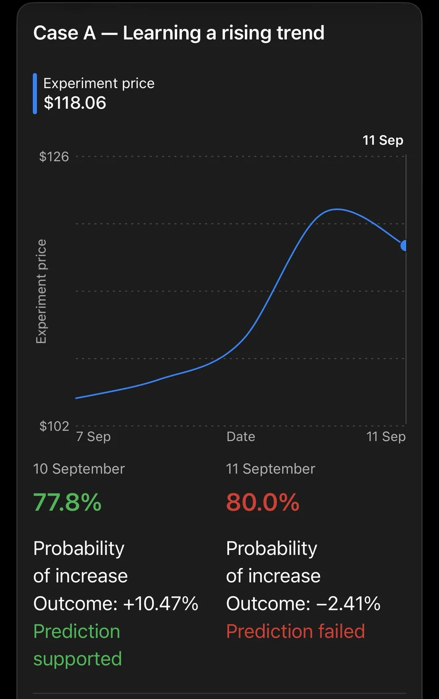
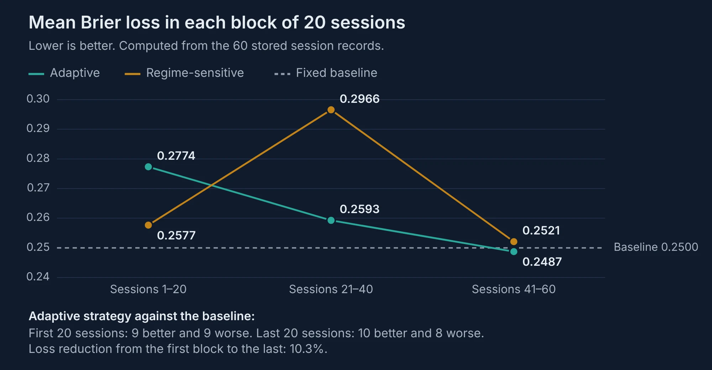

Blog / AI agents and learning / Intelligence That Compounds
Watching a system learn
Sixty sessions of decisions, outcomes and adaptations, measured against a baseline that never learns
This part is built from the session-by-session record of the experiment. It covers 60 trading sessions of Brent crude oil. Before each session, three strategies stated the probability that the price would rise; after it, each forecast was scored and the two learning strategies updated what they knew. Read in order, the sessions show a system starting from nothing, growing confident during a rally, being caught out by the reversal, adjusting, and eventually concluding that neither of its learning strategies was good enough to adopt.
I have followed the record chronologically, and at the sessions that taught the most I have set out what the strategy had seen, what it decided, what happened, how the decision scored and what it did next. The components named along the way are the ones described in Part 1.
How the experiment worked
The learning algorithm was executed over 60 trading sessions of the Brent spot price, from 25 August to 17 November 2026, one session at a time and in order.1 Each forecast used only the sessions before it. Three strategies took part:
| Strategy | How it forms its probability |
|---|---|
| Fixed baseline | Always 50%. It never learns, which makes it the reference for whether learning helped. |
| Adaptive | The share of rises seen so far, starting from no prior view and updated after every outcome |
| Regime-sensitive | The same, but counted separately for sessions that followed a rise and sessions that followed a fall |
Each forecast was scored with the Brier score, the squared difference between the stated probability and what happened. A forecast of 80% that proves wrong scores 0.64, and always saying 50% scores 0.25, so lower is better and confident mistakes are expensive.2 Over the 60 sessions that gave 180 forecast comparisons, and the system wrote one reflection per session into its learning journal. Supabase held the records, and Notion held the dashboard, journal, hypotheses and strategy register.
In terms of the architecture in Part 1, each session went through the same cycle. The strategies drew on their accumulated experience, the outcomes and statistical state built up over earlier sessions, to estimate the probability of a rise. When the outcome was revealed, evaluation scored each forecast against the baseline, the adaptive strategies updated their internal state, and the decision, outcome and score were recorded in Supabase, with a reflection written to Notion. The only external data was the price series; everything else the strategies used was experience they had built up themselves.
That design let me examine how accumulated experience shaped later predictions, how confidence evolved, and whether adaptation turned into measurable improvement. The technical appendix at the end sets out the methodology, scope and implementation status.
I set it up this way because of the monitoring workflow described in the prologue. Seven weeks of scheduled commentary on Brent had produced plenty of analysis and very little that could be checked. Here every decision had to be recorded before its outcome, and every outcome scored, so that whatever happened would at least be measurable.
![The 60-session learning experiment, 25 August to 17 November 2026. Upper panel: Brent spot price, rising from $88.24 to a peak of $135.51 on 2 October and falling back to $92.94. Lower panel: cumulative mean Brier loss, lower is better. The adaptive strategy, in teal, and the regime-sensitive strategy, in amber, swing widely in the first sessions and then settle slightly above the fixed baseline's dashed grey line at 0.2500, finishing at 0.2618 and 0.2688. Over all 60 sessions neither learning strategy beats the fixed baseline, so neither is promoted; forecasting scores only, no trading returns claimed.](img/compounds/exp-dashboard.webp)
Before going through the sessions, it helps to see the whole record at once. Figure 2 plots how confident each learning strategy was before every session, with the actual outcome underneath.
![Line chart of the probability of a rise stated before each of 60 sessions, from 25 August to 17 November 2026. The adaptive strategy, in teal, starts at 50%, dips to 25% after two falls, climbs steadily to about 71% during a run of rises in early September, then declines gradually through October and settles around 44% by mid-November. The regime-sensitive strategy, in amber, follows a much more volatile path: it peaks at 77.8% on 10 September, when Brent rose 10.5%, and 80% on 11 September, when Brent fell 2.4%, then swings repeatedly between about 36% and 75%, ending around 40%; on 4 November it stood at 41.4% and Brent fell 14.2%, and on 5 November at 40% and Brent rose 6.7%. A dashed grey line marks the fixed 50% baseline. A strip below marks each session's outcome as a rise or a fall. Each block of 20 sessions is labelled with both strategies' mean Brier loss: adaptive 0.277, 0.259 and 0.249; regime-sensitive 0.258, 0.297 and 0.252; the baseline scores 0.250 in every block.](img/compounds/exp-confidence.webp)
Starting without experience
On 25 August neither learning strategy had seen anything, so both said 50%, the same as the baseline. Brent fell. With one fall on record, the adaptive strategy said 33.3% the next day, and Brent fell again. With two falls on record it said 25%, and Brent rose 2.75%. That forecast scored 0.5625, more than twice the baseline's 0.25.
This is easy to see on the left of Figure 2. With almost no experience, each observation carries a lot of weight, and two sessions had pushed the adaptive strategy further from 50% than it would go at any point afterwards. Starting from no prior view sounds neutral. In practice it made the strategy very sensitive to its first few outcomes, and those early misses contributed to its poor first block. For a later strategy, the implication is to hold probabilities closer to 50% until enough outcomes have accumulated to justify moving away, which is the idea the confidence-adjusted proposal at the end of this part takes up.
Building confidence
Between 1 and 10 September Brent rose in eight consecutive sessions, and the adaptive strategy's confidence rose with it, one outcome at a time: 33.3% before the run, 50% after two rises, 60% after four, and 69.2% on 10 September, by which point it had recorded 8 rises in 11 sessions. The regime-sensitive strategy moved faster, because it was counting only what had followed a rise, and almost everything recently had.
Nothing about either strategy's rules changed during this period. Their experience changed, and their decisions changed because of it: each new outcome entered the empirical record and moved the next probability.
Confident predictions
By 10 September Brent had risen in six of the seven sessions that followed a rise, so the regime-sensitive strategy put the chance of another rise at 77.8%, its most confident forecast so far. Brent rose 10.47%, the largest single move in the period. The forecast scored 0.049 against the baseline's 0.25, the best result of any forecast in the experiment.
Failure and reversal
The next day the strategy had seven rises in eight sessions after a rise, and raised its confidence to 80%. Brent fell 2.41%. That forecast scored 0.64, the worst result in the experiment, and gave back the previous day's gain almost twice over. The adaptive strategy, at 71.4%, scored 0.51.
| 10 September | 11 September | |
|---|---|---|
| Previous experience | Six rises in the seven sessions after a rise | Seven rises in the eight sessions after a rise |
| Decision | 77.8% chance of a rise | 80.0% chance of a rise |
| Observed outcome | Brent rose 10.47% | Brent fell 2.41% |
| Evaluation | Brier 0.049 against the baseline's 0.25: supported | Brier 0.64 against 0.25: confidence misplaced |
| Subsequent change | Confidence raised to 80% | After a fall, it switched to its record of sessions that followed a fall, 2 rises in 4, and said 50% |

The learning journal records each of these sessions: the probability before the outcome, the realised move, the loss against the baseline, and the probability the strategy would carry into the next session.
![Learning journal, three consecutive reflections, mechanically derived from the stored statistical results, not written by a language model. Session 11, 9 September: adaptive 66.7%, regime-sensitive 75.0%, realised move +3.19%, adaptive loss 0.1111 against the baseline's 0.2500, beat the baseline, next adaptive probability 69.2%. Session 12, 10 September: adaptive 69.2%, regime-sensitive 77.8%, realised +10.47%, loss 0.0947, beat the baseline, next 71.4%. Session 13, 11 September: adaptive 71.4%, regime-sensitive 80.0%, realised −2.41%, loss 0.5102, underperformed the baseline, confidence was misplaced, next 66.7%.](img/compounds/exp-journal.webp)
What I take from Case A is that the same accumulated evidence did two things at once. It let the strategies recognise the trend, and it made them most confident at exactly the point where the trend ended. I don't think that is a quirk of these two simple strategies; any system that learns from a run of outcomes faces it. This is also where the evaluation step matters in the architecture. Because every forecast was scored against the same baseline, the record shows directly that the strategy's most confident forecasts carried its largest losses, which turns confidence into something a future strategy should control explicitly rather than inherit from its counts.
Updating after failure
What a system does after a failure says a lot about how it learns, and here the two strategies behaved very differently.
The adaptive strategy carries its whole history. After the fall on 11 September it lowered its view only slightly, to 66.7%, because one fall barely changes a record of nine rises in thirteen sessions. It then repeated the September pattern on a smaller scale, at 68.8% and right on 15 September, then 70.6% and wrong on 16 September. When Brent fell in five consecutive sessions from 16 to 22 September, the adaptive strategy went on saying that a rise was more likely than not, easing from 70.6% to 57.1%, and scored worse than the baseline in every one of them. A long memory made it stable, and it also made it slow.
The regime-sensitive strategy reacted immediately. After a fall it consulted only its record of sessions that had followed earlier falls, which on 14 September held 2 rises in 4, so it said 50%. Over the same five falling sessions its view dropped from 75% to 40% and it lost much less. The speed worked against it a day later, when it stood at 36.4% on 23 September and was caught by a rebound. For the rest of the experiment it swung between about 40% and 71%, as Figure 2 shows.
The contrast exposes a design parameter that neither strategy sets deliberately: how much weight the most recent outcomes should carry against the whole history. The adaptive strategy gives every session equal weight, and the regime-sensitive strategy effectively discards most of its history at each change of direction. Both choices failed in recognisable ways, and the session record now holds the evidence needed to test something in between.
November tested both again, after Brent had fallen from about $120 at the end of October.
| 4 November | 5 November | |
|---|---|---|
| Previous experience | After a fall. Regime-sensitive: 11 rises in the 27 sessions that had followed a fall. Adaptive: 23 rises in 50 sessions | After another fall. Regime-sensitive: 11 rises in 28. Adaptive: 23 rises in 51 |
| Decision | Regime-sensitive: 41.4% chance of a rise, so 58.6% for a fall. Adaptive: 46.2% | Regime-sensitive: 40.0%, so 60% for a fall. Adaptive: 45.3% |
| Observed outcome | Brent fell 14.19% | Brent rebounded 6.66% |
| Evaluation | Both beat the baseline: 0.171 and 0.213 against 0.25 | Both lost: 0.36 and 0.299 against 0.25 |
| Subsequent change | Both leaned further towards a fall | Both moved back towards 50%, the regime-sensitive strategy past it to 52% |

By November the adaptive strategy's probabilities sat in the mid-40s. That is close to how often Brent had actually risen over the period, in 27 of 60 sessions, or 45%. Its forecasts were much less extreme than in September, so its wins were smaller and its losses were much smaller. In effect it had learned the base rate of the market it was watching. The regime-sensitive strategy had also adapted to falling prices, and it stayed exposed to a sudden rebound.
The measurements in the next section cover all 60 sessions.
Measuring across stages
To see whether the strategies improved, the sessions were grouped into three blocks of 20 and compared mean Brier loss.

| Sessions | Adaptive | Regime-sensitive | Fixed baseline |
|---|---|---|---|
| 1 to 20 | 0.2774 | 0.2577 | 0.2500 |
| 21 to 40 | 0.2593 | 0.2966 | 0.2500 |
| 41 to 60 | 0.2487 | 0.2521 | 0.2500 |
| All 60 | 0.2618 | 0.2688 | 0.2500 |
The adaptive strategy improved in each block. Its loss fell by 10.3% from the first block to the last. In the first 20 sessions it was better than the baseline 9 times and worse 9 times; in the last 20 it was better 10 times and worse 8 times, and its loss of 0.2487 was 0.5% below the baseline's. The regime-sensitive strategy showed no such progression, and its worst block was the middle one. That difference is why the governance decisions later in this part treat the two strategies differently: one is still improving and stays under test, and the other is not.

I also examined whether the probabilities the strategies assigned were consistent with the outcomes that followed.
Across the ten sessions in which the regime-sensitive strategy estimated the probability of a rise at 65% or higher, its average forecast was 72.6%, and the price rose in 60% of those sessions. All ten fell between 7 and 29 September, during the rally and the reversal that followed it, so the overestimate is concentrated in exactly the period Case A describes.
The adaptive strategy showed the opposite problem. Across the nine sessions in which it estimated the probability of a rise at less than 45%, its average forecast was 39.1%, while the price rose in 66.7% of them. Five of those nine sessions came in its first week, when it had seen only a handful of outcomes, and the other four in November.
![Forecast probability versus observed frequency of a rise, for two selected subsets of the 60 sessions. Regime-sensitive strategy, in amber, 10 sessions where it put the probability of a rise at 65% or higher, all between 7 and 29 September: mean forecast 72.6%, observed frequency 60.0%. Adaptive strategy, in teal, 9 sessions where it put the probability of a rise below 45%, five in its first week and four in November: mean forecast 39.1%, observed frequency 66.7%. Note: small, selected samples; a descriptive comparison, not conclusive calibration evidence; thresholds chosen after the experiment.](img/compounds/exp-calibration.webp)
Small as the samples are, they point the same way as Cases A and B: one strategy overestimated the probability of a rise and the other underestimated it, and in both cases the forecasts were further from 50% than the outcomes justified. That suggests both would benefit from better-calibrated probabilities.
This is the point at which an evaluation result becomes an input to the next learning cycle. The gap between forecast probabilities and observed outcomes supports a specific hypothesis: that the strategies assign more confidence to directional patterns than the evidence warrants. That hypothesis is already registered in the reflective workspace as H03, that shrinking probabilities towards 50% reduces overconfidence, and these observations from the empirical record strengthen the case for testing it. A confidence-adjusted strategy can then be tested against the existing ones under the same protocol, and adopted only if it measurably improves later predictions. Supabase preserves the evidence, Notion holds the hypothesis, and the evaluation mechanism decides whether the proposed adaptation is worth keeping.
Comparing with the fixed baseline
Across the whole period, the improvement was not enough. Session by session, the adaptive strategy beat the fixed baseline 28 times, did worse 27 times and tied 5 times, and the regime-sensitive strategy beat it 23 times, did worse 27 times and tied 10 times. Over all 60 sessions, the adaptive strategy's loss was 4.7% higher than simply saying 50% every day, and the regime-sensitive strategy's was 7.5% higher.
I think two things explain the gap. Much of the adaptive strategy's improvement came from becoming less confidently wrong as it converged on a base rate close to 50%, which is where the baseline started. And in a market that went from $88 to above $130 and back to $93 in twelve weeks, the past frequency of rises was a weak guide to the next session. The adaptive strategy appears to have learned most of what prices alone could teach it, and the baseline shows how little that was. Both directional hypotheses were therefore recorded in the register as not supported: H01, that accumulated frequency of rises beats a fixed probability, and H02, that the previous direction improves the forecast. That closes those two lines of adaptation and points the next cycle towards the quality of the probabilities rather than the direction they lean.
It is worth being exact about the kind of learning involved. The strategies learned statistically, by updating counts of outcomes, with no language model in the loop, and every probability either strategy produced can be reproduced exactly from the record, given the initial state that Part 1 describes. That is learning in a full sense, and it is the easiest kind to audit. The 60 reflections in the journal were derived from those records rather than written by a model reasoning about each day, and the journal says so at the top. Reflection by a language model, interpreting outcomes and proposing changes to its own strategy, is the next layer of the reference design. What this experiment provides for it is a record against which any claimed improvement can be checked.
Rejecting a strategy and choosing the next experiment
Given those results, the governance decisions were straightforward. The fixed baseline was retained. The adaptive strategy was not promoted, but it stays under test because it was still improving. The regime-sensitive strategy was not promoted.

The next experiment came out of the failures in September and November. Both strategies lost most heavily when they were most confident, so the proposal is a confidence-adjusted strategy that pulls its probabilities towards 50% until enough evidence has built up to justify moving away. The hypotheses and the protocol for testing them were written down before any test.
![Hypotheses and experiments. H01, in teal, accumulated directional frequency beats a fixed probability: 0.2618 versus 0.2500, not supported. H02, in amber, prior direction improves the forecast: 0.2688 versus 0.2500, not supported. H03, shrinkage towards 50% reduces overconfidence: not yet tested, proposed. H04, physical supply evidence improves probability forecasts: news not integrated, proposed. Prospective protocol: freeze the candidate and the baseline, use the same cutoff and instrument, at least 30 paired observations, compare Brier score and coverage, require human approval; no claims of statistical significance.](img/compounds/exp-hypotheses.webp)
Every candidate follows the same protocol: freeze the candidate and the baseline, use the same cutoff and the same instrument, collect at least 30 paired future observations, compare Brier score and coverage, and require my approval before anything changes. Because each test runs forward on dates that had not happened when it began, this is walk-forward evaluation, the usual safeguard against strategies that only fit the past.2
What I take from it
Reported on its own, the 10.3% improvement would have overstated the result, and it was the architecture that prevented that. Because every decision was recorded before its outcome, experience could accumulate and change the next decision, and Figure 2 is that change made visible. Because evaluation compared each strategy with a baseline that never learned, on the same sessions, it could show that the adaptive strategy was improving and still not good enough. And because adoption required a human decision against rules set in advance, the system kept its baseline and turned its failures into the next experiment.
The conclusion I drew at the end of the experiment still seems right to me: learning is more than accumulating experience, because it depends on measuring whether that experience improves decisions and rejecting the adaptations that do not. A system that treats learning, measured improvement and permission to change its behaviour as the same thing will eventually promote its luckiest guesses.
Part 3 considers what this means inside an organisation, where decisions are commercial, outcomes can take months, and approving a change has real consequences.
Technical appendix
Experimental methodology and scope
The experiment was conducted on 24 November 2026 using the historical Europe Brent spot price published by the US Energy Information Administration,1 and republished by FRED as DCOILBRENTEU, covering 60 evaluation sessions between 25 August and 17 November 2026. The 62 price observations used, the 60 session prices and the two earlier observations that initialised the experiment (21 and 24 August), were afterwards cross-checked against the original EIA daily series. All 62 matched, with no discrepancies, and the direction of every session recalculated from the EIA values matches the stored outcomes.
The strategies processed the observations sequentially. Each forecast was generated from the strategy's accumulated state before the next outcome was introduced; the outcome was then evaluated and incorporated into the following learning cycle. Previous outcomes therefore informed every later forecast, and the price series was the only external observational data. The two initialising observations gave the regime-sensitive strategy the direction of the market before the first session. Every probability stored for both learning strategies, and every score, has been reproduced from these update rules and the recorded prices.
The experiment concentrated on statistical adaptation, to establish a measurable foundation for the broader learning architecture. External research and judgement by a language model were outside its scope: no news was collected for the period, and the reflections recorded in Notion were not used by a language model to generate forecasts.
The evaluation follows the order of observations, not the times at which they were historically published. Because EIA publishes the series with a delay, the results should be read as a sequential learning experiment, not as a reconstruction of real-time forecasting conditions.
Sixty sessions give an initial view of how the strategies behave as experience accumulates. Given the limited sample and the likely temporal dependence between market observations, the results are descriptive and make no claim of statistical significance. Cases A and B illustrate the behaviour of the learning mechanism; they do not validate it independently.
The reported metrics measure forecasting performance, not investment returns.
Implementation status
Implemented and tested: Supabase as empirical memory, with seven of the ten designed tables, two of them for the learning experiments; Notion as reflective memory, with the dashboard, learning journal, hypotheses, strategy register and governance pages; the 60-session sequential learning experiment, with scoring, reflections, strategy comparison and governance decisions; and a manual test of recording live forecasts, which produced the first forecasts on 24 November, not yet scored and not part of this analysis. Designed, not yet implemented: the scheduled engines running unattended, Firecrawl research acquisition, the remaining three tables, forecasting and strategy revision informed by news and the model, automated recording of the monitoring workflow's views, and prospective champion and challenger testing.
Sources
- U.S. Energy Information Administration, Europe Brent Spot Price FOB, daily series, accessed November 2026; republished by FRED as DCOILBRENTEU. The series used in the experiment, and the source against which its 62 price inputs were checked.
- Wikipedia, Brier score and Walk forward optimization.